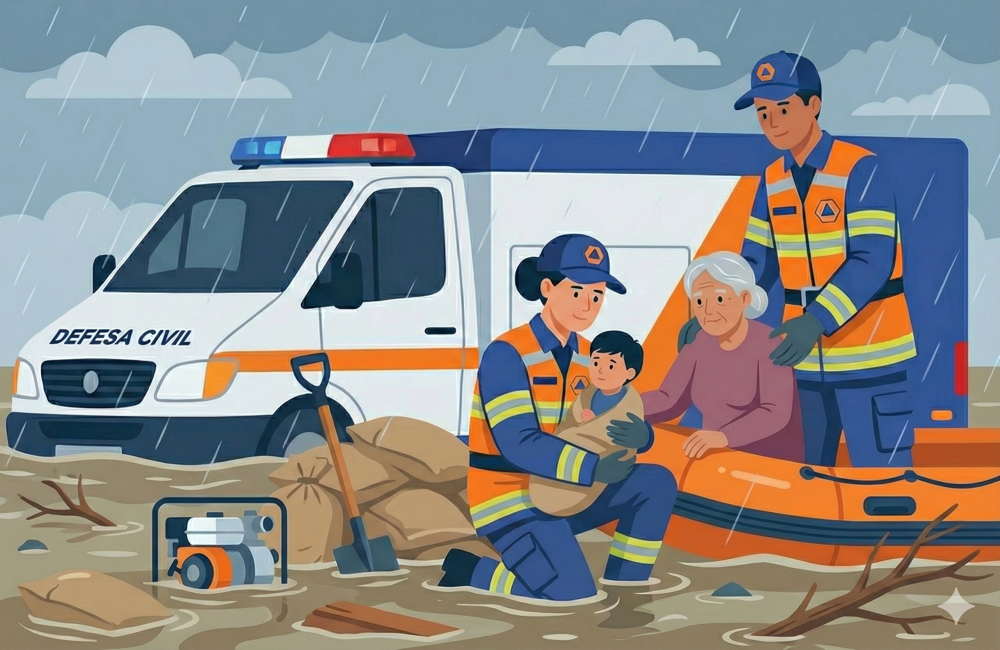

Endereço: R. Dom José Gaspar, 500 - Coração Eucarístico, Belo Horizonte - MG
Proteção e Prevenção
Receba alertas meteorológicos, solicite vistorias em áreas de risco ou acione ajuda em caso de desastres.

Receba alertas meteorológicos, solicite vistorias em áreas de risco ou acione ajuda em caso de desastres.
